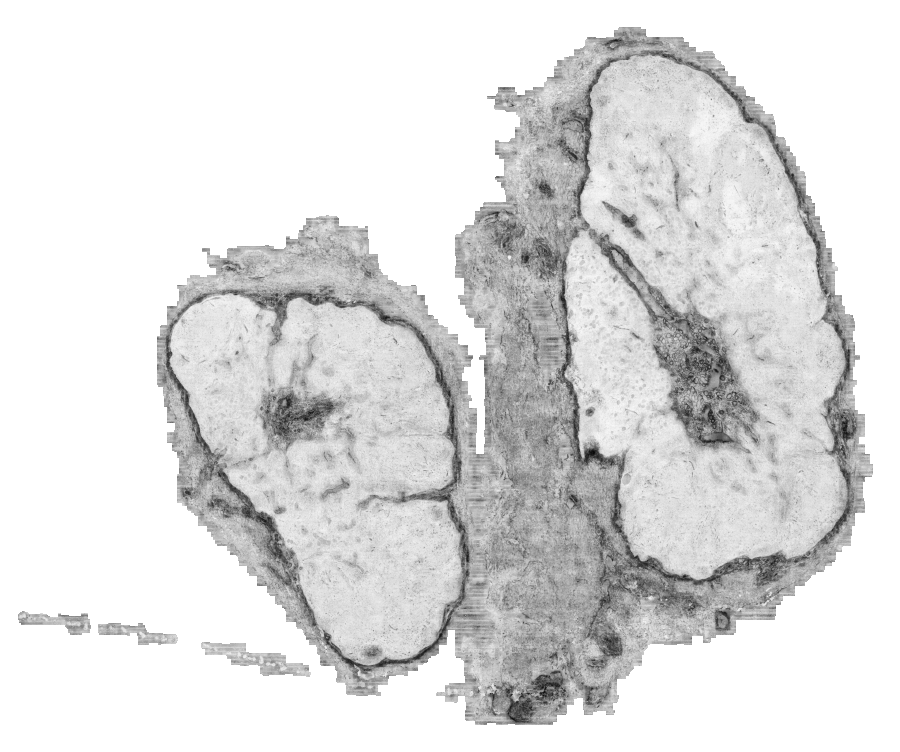
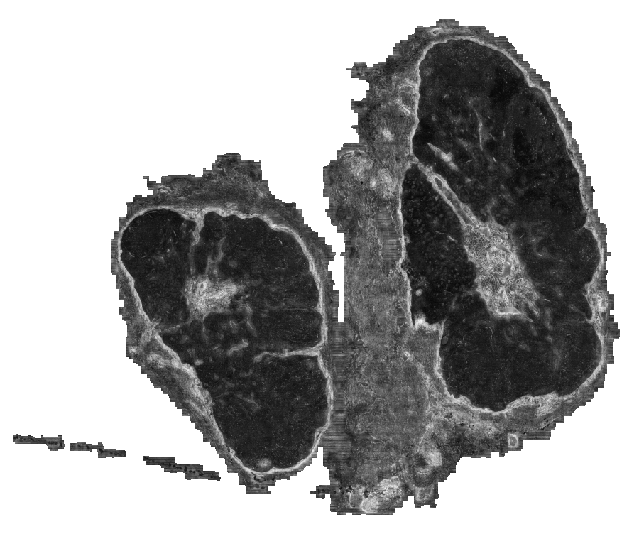
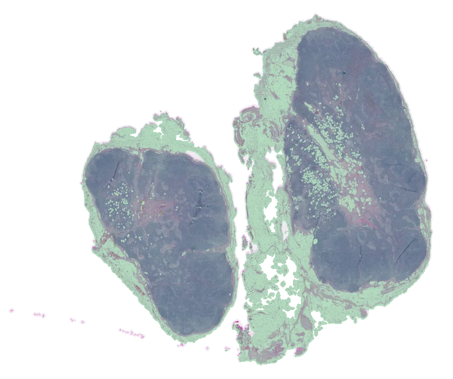
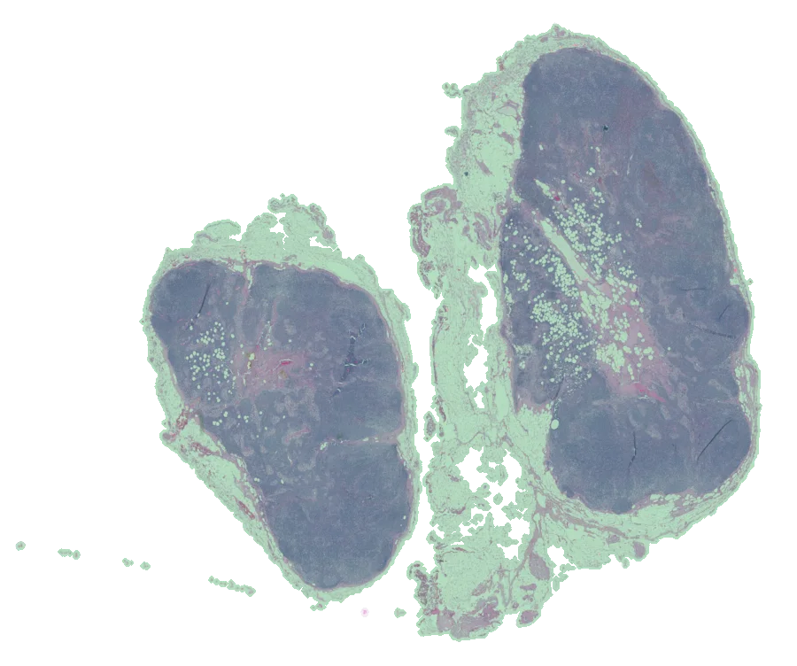
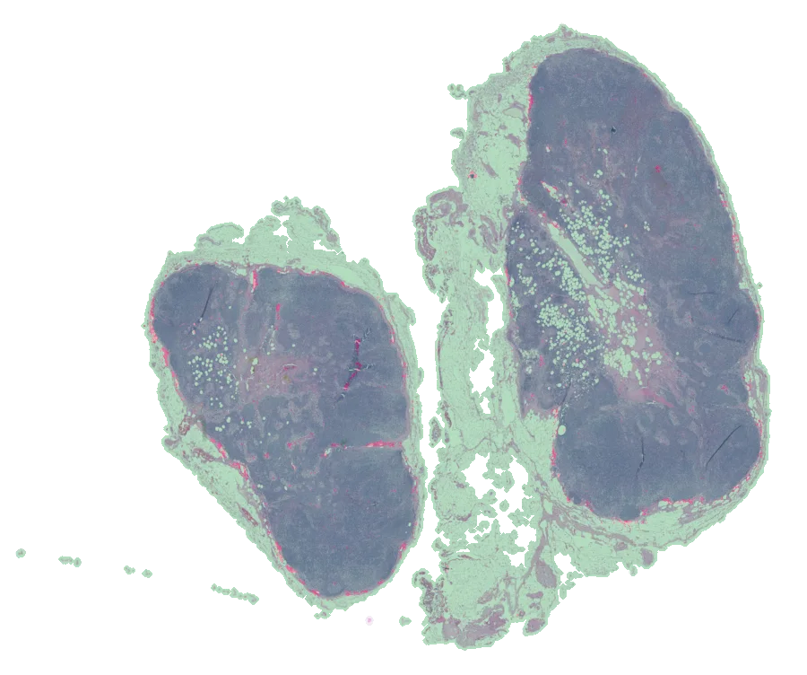

The seven overview panels show tissue only, using one H&E-derived display mask on their matched frames. The interactive GeoJSON view uses the reviewed H&E support, including at source-detail zoom. The saved predictions and score denominators are unchanged.
← Benchmark 3 overview · View official expert annotation
The reviewed H&E-only support contains 4,549,588 4-µm pixels. All 4,161,559 official known benign pixels form the score denominator, including 5,710 outside reviewed support. This previously inspected reference is public, so this result is reference-visible, not blind. The reviewed source-only support excludes some pale adipose under the fixed tissue rule.
Virchow2 encoded 6,126/1,599/434 tissue tiles at factors 1/2/4 with all 1,280 channels. The current U-Net and DeepLab processed 2,210 of 5,688 global patches intersecting reviewed tissue. MedSAM used 176 boxes on 92 tiles from the current one-slide U-Net. VISTA uses its unchanged generic tumor prompt and same-slide, same-support audited output. These workflows have different prompt and pretraining dependencies.
Predicted metastasis and non-metastatic tissue signals
Reference: no metastasis. An exploratory tumor-like signal needs an eight-connected focus of at least 625 pixels (0.01 mm²) in reviewed tissue. This is not a diagnosis.
| Method | Tumor-like focus | Explicit non-metastatic focus | Largest tumor-like focus, mm² | Total tumor-like area, mm² |
|---|---|---|---|---|
| Bora · tumor_093-only fit | Present | Present | 0.3256 | 4.7867 |
| Class-aware U-Net · tumor_093-only fit | No qualifying focus | Present | 0.0032 | 0.0635 |
| DeepLabV3+ · tumor_093-only fit | Present | Present | 0.0302 | 0.6969 |
| MedSAM · current U-Net boxes | No qualifying focus | Not available | 0.0055 | 0.0814 |
| VISTA-PATH · generic tumor prompt | Present | Not available | 5.3976 | 11.8594 |
Bora’s binary threshold (score margin 0.1996) was chosen using tumor_093 training labels only: the highest threshold retaining at least 95% sensitivity on sampled metastatic tokens (achieved 95.02%; sampled benign specificity 98.93%). This is training-set calibration and does not guarantee sensitivity on other slides. The 4 µm prediction received 6 µm class-contour smoothing and repeated 2,000 µm² small-region cleanup. Scores below use the exact finished raster; the GeoJSON review contour has separately guarded geometric smoothing.
Binary agreement on official known pixels
This benign slide has no reference metastasis. IoU, Dice, recall, balanced accuracy, boundary F1 and lesion recall are undefined. Specificity uses all 4,161,559 official known benign pixels, including 5,710 outside reviewed support. Native predictions are primary; shared-support predictions are a sensitivity analysis on the same denominator.
| Method | Native specificity | Shared-support specificity | Native false positives | Shared false positives | Native false-positive tissue, mm² | Shared false-positive tissue, mm² |
|---|---|---|---|---|---|---|
| Bora · tumor_093-only fit | 92.390% | 92.896% | 316,707 | 295,629 | 5.0673 | 4.7301 |
| Class-aware U-Net · tumor_093-only fit | 99.905% | 99.905% | 3,948 | 3,948 | 0.0632 | 0.0632 |
| DeepLabV3+ · tumor_093-only fit | 98.956% | 98.956% | 43,458 | 43,458 | 0.6953 | 0.6953 |
| MedSAM · current U-Net boxes | 99.878% | 99.878% | 5,072 | 5,072 | 0.0812 | 0.0812 |
| VISTA-PATH · generic tumor prompt | 82.189% | 82.189% | 741,215 | 741,215 | 11.8594 | 11.8594 |
Completion: five of five current workflows. Download exact scores and denominators. This public training-release slide is not a hidden challenge test; patient and centre separation remain unverified.
Contour fidelity: the exact scored Bora mask is on a 4 µm grid with a 6 µm class-contour pass and 2,000 µm² minimum connected geometry. The downloadable inspection GeoJSON applies a guarded 1.5 µm global vector fit; every class polygon remains at least 2,000 µm². Scores are calculated from the exact raster, so the fitted contour can differ slightly at high zoom. The reviewed H&E tissue boundary remains fixed.
Inspect the display-filtered Bora GeoJSON
Pan and zoom the reviewed H&E tissue with Bora contours. The viewer hides metastasis-like polygons smaller than 0.02 mm² for display only. The saved review vector and exact scored raster are unchanged.
Open the tissue viewer in a full window · Download the saved Bora GeoJSON.
Color key for matched panels: red is a tumor-like positive signal and green is the binary negative area inside the reviewed H&E tissue support. Bora, U-Net and DeepLabV3+ explicitly output a non-metastatic class. MedSAM and VISTA-PATH do not: their green is derived by exclusion of their positive signal for display and binary scoring, not a separate benign tissue prediction.
Bora black-and-white class responses
White indicates a stronger relative response from the tumor_093-only Bora head; black indicates a weaker response. The two displays are a softmax of the smoothed class scores, not calibrated probabilities, the thresholded BW masks, or independent Virchow2 measurements at each pixel. Transparent areas are outside reviewed H&E tissue. The training-selected threshold, 6 µm contour smoothing and 2,000 µm² cleanup apply to the separate final mask; these displays do not alter scores.


Tissue-region overview · analysis restricted to reviewed tissue




